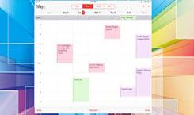

Your univerity of choice!


Welcome to ST. Paul's University
Prof. James Kombo Vice Chancellor
St. Paul’s University is a Christian ecumenical institution with students and staff from all over the world. Our mission is to raise the standards of education through holistic learning, in a Christian ecumenical atmosphere that gives room for people of all faiths to find a place of study, research, intellectual and spiritual engagement and growth.We dare dream, plan and act, as we serve God and humanity. We have continued to make great strides and are ever grateful to all who have been part of our journey. We do not take for granted the high standards of excellence that we see all round us. It has taken genuine willingness of many who have sacrificially given of themselves in extraordinary service. We owe our successes to God and to all who proudly and selflessly carry the distinctive St. Paul’s mark of dedication
Read MoreAcademics
Faculties
Faculty of Theology, Faculty of Business Compuer Science and Communication Studies
Read MoreAcademic Programmes
We offer unique postgraduate, undergraduate, diploma and certificate programs.
Read MorePostgraduate Studies
The Board of Postgraduate Studies of St. Paul’s University envisions itself as an efficient Board dedicated
Read MoreDistance Learning
St. Paul’s University rolled out its Distance Learning Academic Programmes in September 2012
Read MoreFaculties
Faculty of Theology, Faculty of Business Compuer Science and Communication Studies
Read MoreAcademic Programmes
We offer unique postgraduate, undergraduate, diploma and certificate programs.
Read More

Postgraduate Studies
The Board of Postgraduate Studies of St. Paul’s University envisions itself as an efficient Board dedicated
Read MoreDistance Learning
St. Paul’s University rolled out its Distance Learning Academic Programmes in September 2012
Read More